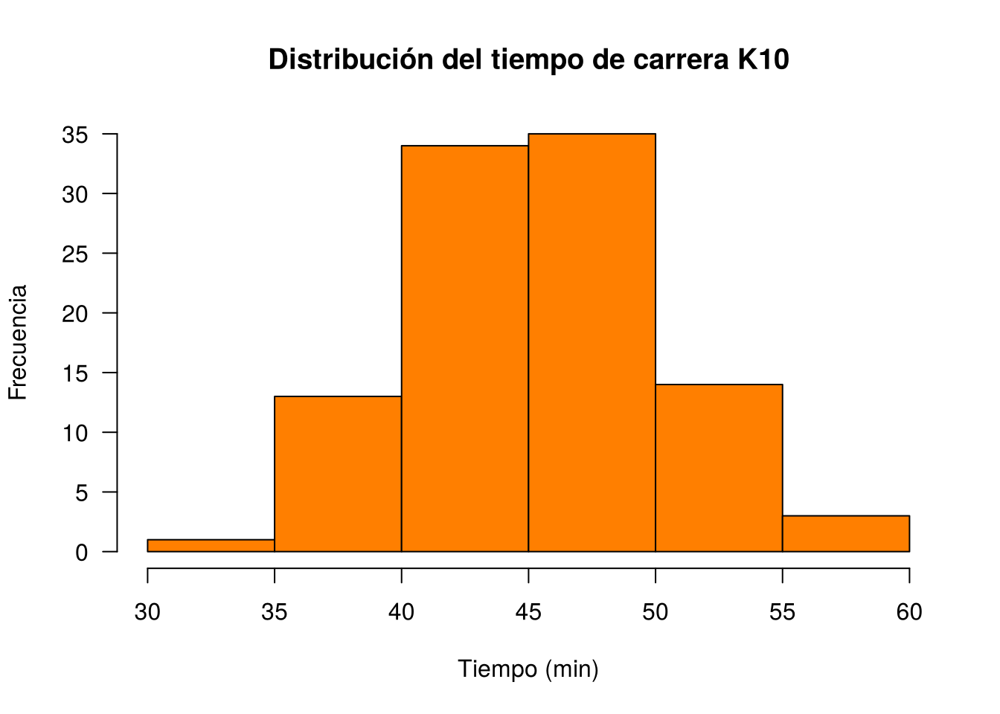
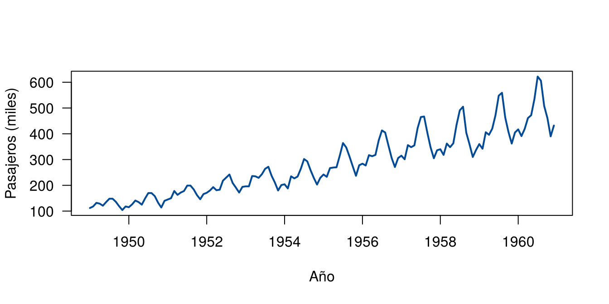

John Chambers, uno de los creadores del lenguaje S, resumió la forma de trabajar en R en dos ideas: todo lo que existe es un objeto y todo lo que ocurre es una llamada a una función. Un número, una base de datos, un gráfico guardado o un modelo ajustado son objetos. Conocerlos permite entender qué se puede hacer con cada resultado y por qué algunas instrucciones producen errores.
Un objeto se crea asignándole un nombre con el operador
<-. El atajo en RStudio es Alt
+ - en Windows y Linux, y Option + - en
macOS.
edad <- 21 # crea el objeto
edad # muestra su contenido
[1] 21
edad + 4 # lo usa en un cálculo; no cambia el objeto
[1] 25
edad <- edad + 4 # reemplaza el contenido
edad
[1] 25Los nombres pueden contener letras, números, puntos y guiones bajos,
y no pueden empezar con un número. R distingue
mayúsculas de minúsculas: Edad y edad son
objetos distintos.
Para consultar y eliminar objetos del ambiente de trabajo se usan
ls() y rm():
ls()
[1] "edad"
rm(edad)Los objetos más usados se distinguen por dos preguntas: cuántas dimensiones tienen y si admiten elementos de distinto tipo.
| Dimensiones | Un solo tipo | Varios tipos |
|---|---|---|
| 1 | vector | lista |
| 2 | matriz | data frame |
| n | arreglo |
La siguiente tabla resume los tipos de datos que admite cada objeto.
| Objeto | Tipos | ¿Permite varios tipos? |
|---|---|---|
| vector | numérico, carácter, complejo, lógico | No |
| factor | numérico, carácter | No |
| arreglo | numérico, carácter, complejo, lógico | No |
| matriz | numérico, carácter, complejo, lógico | No |
| data frame | numérico, carácter, complejo, lógico | Sí |
| ts | numérico, carácter, complejo, lógico | No |
| lista | numérico, carácter, complejo, lógico, función, expresión | Sí |
Adaptada de: R para principiantes.
Cada valor tiene un tipo. La función typeof() lo informa
y class() indica cómo se comporta el objeto.
typeof(3.5) # número decimal (double)
[1] "double"
typeof(5L) # número entero: la L lo indica
[1] "integer"
typeof("hola") # texto
[1] "character"
typeof(TRUE) # lógico
[1] "logical"
typeof(2 + 3i) # complejo
[1] "complex"R también tiene valores especiales:
| Valor | Significado | Ejemplo |
|---|---|---|
NA |
dato faltante | c(1, NA, 3) |
NaN |
resultado indefinido | 0 / 0 |
Inf |
infinito | 1 / 0 |
NULL |
ausencia de objeto | length(NULL) es 0 |
Un dato faltante se propaga en los cálculos. Por eso muchas funciones
tienen el argumento na.rm:
notas <- c(4.0, NA, 3.5)
mean(notas)
[1] NA
mean(notas, na.rm = TRUE)
[1] 3.75Los números decimales se guardan con precisión finita, así que
algunas comparaciones exactas fallan. Para comparar decimales se usa
all.equal(), como explica la FAQ de R.
0.1 + 0.2 == 0.3
[1] FALSE
all.equal(0.1 + 0.2, 0.3)
[1] TRUEUn vector es una estructura unidimensional con elementos del mismo tipo. Es la unidad básica de R: un solo número es un vector de longitud 1.
x <- c(1, 2, 3, 4, 5)
y <- c("Muy regular", "Regular", "Bueno", "Muy bueno", "Excelente")
x
[1] 1 2 3 4 5
y
[1] "Muy regular" "Regular" "Bueno" "Muy bueno" "Excelente"
length(y)
[1] 5Los elementos se seleccionan con corchetes. Las posiciones empiezan en 1.
precios <- c(cafe = 3500, pan = 1200, jugo = 4800, arepa = 2500)
precios[2] # por posición
pan
1200
precios[c(1, 3)] # varias posiciones
cafe jugo
3500 4800
precios[-1] # todos menos el primero
pan jugo arepa
1200 4800 2500
precios["jugo"] # por nombre
jugo
4800
precios[precios > 3000] # por condición
cafe jugo
3500 4800 Las operaciones se aplican a cada elemento sin necesidad de un ciclo. Esta propiedad se llama vectorización.
precios * 1.05 # aumento del 5 %
cafe pan jugo arepa
3675 1260 5040 2625
c(1, 2, 3) + c(10, 20, 30)
[1] 11 22 33Si los vectores tienen longitudes distintas, R repite el más corto. Esta regla se llama reciclaje y solo genera una advertencia cuando las longitudes no son múltiplos.
1:6 + c(10, 20)
[1] 11 22 13 24 15 26
1:5 + c(10, 20)
Warning in 1:5 + c(10, 20): longer object length is not a multiple of shorter
object length
[1] 11 22 13 24 15Como un vector admite un solo tipo, R convierte todos los elementos al tipo más general: de lógico a numérico y de numérico a texto.
c(1, TRUE, FALSE)
[1] 1 1 0
c(1, "dos", TRUE)
[1] "1" "dos" "TRUE"Al convertir valores lógicos en números, TRUE vale 1 y
FALSE vale 0. Esto permite contar y calcular
proporciones:
tiempos <- c(52, 61, 48, 75, 58, 66)
sum(tiempos < 60) # cuántos tardaron menos de 60 minutos
[1] 3
mean(tiempos < 60) # qué proporción
[1] 0.5Un factor representa una variable categórica. Guarda los valores posibles, llamados niveles, y se usa para clasificar datos en grupos.
colores <- rep(c("rojo", "verde", "azul"), times = 4)
colores <- factor(colores)
colores
[1] rojo verde azul rojo verde azul rojo verde azul rojo verde azul
Levels: azul rojo verde
levels(colores)
[1] "azul" "rojo" "verde"
table(colores)
colores
azul rojo verde
4 4 4 Por defecto, los niveles se ordenan alfabéticamente. En una variable ordinal hay que indicar el orden:
respuestas <- c("Bueno", "Regular", "Excelente", "Bueno")
calificacion <- factor(respuestas,
levels = c("Regular", "Bueno", "Excelente"),
ordered = TRUE)
calificacion
[1] Bueno Regular Excelente Bueno
Levels: Regular < Bueno < Excelente
calificacion >= "Bueno"
[1] TRUE FALSE TRUE TRUELa función cut() crea un factor a partir de una variable
cuantitativa:
cut(tiempos, breaks = c(0, 50, 60, Inf), labels = c("Alto", "Medio", "Bajo"))
[1] Medio Bajo Alto Bajo Medio Bajo
Levels: Alto Medio BajoUn factor guarda códigos internos, no los valores escritos. Si las categorías parecen números, primero se convierte a texto.
estrato <- factor(c("10", "20", "20", "50"))
as.numeric(estrato) # devuelve los códigos internos
[1] 1 2 2 3
as.numeric(as.character(estrato)) # devuelve los valores
[1] 10 20 20 50Una matriz es un arreglo de dos dimensiones con elementos del mismo tipo. Por defecto se llena por columnas.
m <- matrix(1:6, nrow = 2)
p <- matrix(1:6, nrow = 2, byrow = TRUE)
m
[,1] [,2] [,3]
[1,] 1 3 5
[2,] 2 4 6
p
[,1] [,2] [,3]
[1,] 1 2 3
[2,] 4 5 6
dim(m)
[1] 2 3Los elementos se seleccionan indicando [fila, columna].
Si se omite uno de los dos, se obtiene toda la fila o la columna.
m[2, 3] # fila 2, columna 3
[1] 6
m[1, ] # fila 1
[1] 1 3 5
m[, 2] # columna 2
[1] 3 4El operador * multiplica elemento a elemento. El
producto matricial se calcula con %*%:
A <- matrix(c(2, 1, 0, 3), nrow = 2)
A * A
[,1] [,2]
[1,] 4 0
[2,] 1 9
A %*% A
[,1] [,2]
[1,] 4 0
[2,] 5 9
t(A) # transpuesta
[,1] [,2]
[1,] 2 1
[2,] 0 3
solve(A) # inversa
[,1] [,2]
[1,] 0.5000000 0.0000000
[2,] -0.1666667 0.3333333Un arreglo (array) extiende la matriz a más de dos dimensiones. El siguiente ejemplo apila 3 matrices de 3x3, como un cubo de datos.
cubo <- array(1:27, dim = c(3, 3, 3))
cubo[2, 3, 1] # fila 2, columna 3, matriz 1
[1] 8
cubo[, , 2] # matriz 2 completa
[,1] [,2] [,3]
[1,] 10 13 16
[2,] 11 14 17
[3,] 12 15 18Las tablas cruzadas de varias variables son arreglos.
UCBAdmissions, incluida en R, tiene las
solicitudes de admisión a la Universidad de California en Berkeley en
1973 por resultado, sexo y departamento.
dim(UCBAdmissions)
[1] 2 2 6
dimnames(UCBAdmissions)
$Admit
[1] "Admitted" "Rejected"
$Gender
[1] "Male" "Female"
$Dept
[1] "A" "B" "C" "D" "E" "F"
UCBAdmissions["Admitted", "Female", "A"] # consulta por nombre
[1] 89
apply(UCBAdmissions, c(1, 2), sum) # total por resultado y sexo
Gender
Admit Male Female
Admitted 1198 557
Rejected 1493 1278Una lista es una colección ordenada que puede contener objetos de cualquier tipo y longitud, incluso otras listas.
curso <- list(
nombre = "Métodos y Simulación Estadística",
notas = c(3.5, 4.2, 4.8),
activo = TRUE
)
str(curso)
List of 3
$ nombre: chr "Métodos y Simulación Estadística"
$ notas : num [1:3] 3.5 4.2 4.8
$ activo: logi TRUEHay tres formas de acceder a una lista, y la diferencia importa:
curso[2] # una lista con el elemento: sigue siendo lista
$notas
[1] 3.5 4.2 4.8
curso[[2]] # el elemento: un vector numérico
[1] 3.5 4.2 4.8
curso$notas # el elemento, por nombre
[1] 3.5 4.2 4.8
mean(curso$notas)
[1] 4.166667Una imagen útil: si la lista es un tren, [ ] devuelve un
vagón y [[ ]] devuelve lo que va dentro del vagón.
Las funciones que entregan varios resultados suelen devolver una
lista. Por ejemplo, hist() construye el gráfico y además
guarda sus cálculos.
set.seed(123)
h <- hist(rnorm(100, 45, 5), col = "#FF7F00",
main = "Distribución del tiempo de carrera K10",
xlab = "Tiempo (min)", ylab = "Frecuencia", las = 1)
names(h)
[1] "breaks" "counts" "density" "mids" "xname" "equidist"
h$breaks
[1] 30 35 40 45 50 55 60
h$counts
[1] 1 13 34 35 14 3Lo mismo ocurre con un modelo: lm() devuelve una lista
de la que se puede extraer lo que se necesite.
modelo <- lm(mpg ~ wt, data = mtcars)
typeof(modelo)
[1] "list"
names(modelo)[1:4]
[1] "coefficients" "residuals" "effects" "rank"
modelo$coefficients
(Intercept) wt
37.285126 -5.344472
summary(modelo)$r.squared
[1] 0.7528328Un data frame es la estructura habitual para una base de datos: las filas son observaciones y las columnas son variables. Internamente es una lista de vectores de la misma longitud, y por eso cada columna puede tener un tipo distinto.
estudiantes <- data.frame(
nombre = c("Ana", "Luis", "Marta", "Pedro"),
edad = c(21, 24, 22, 30),
ciudad = c("Cali", "Pasto", "Cali", "Popayán"),
aprobado = c(TRUE, TRUE, FALSE, TRUE)
)
estudiantes
nombre edad ciudad aprobado
1 Ana 21 Cali TRUE
2 Luis 24 Pasto TRUE
3 Marta 22 Cali FALSE
4 Pedro 30 Popayán TRUEPara explorar un data frame se usan estas funciones.
iris tiene 150 registros (filas) y 5 variables
(columnas).
dim(iris) # filas y columnas
[1] 150 5
head(iris, 3) # primeros registros
Sepal.Length Sepal.Width Petal.Length Petal.Width Species
1 5.1 3.5 1.4 0.2 setosa
2 4.9 3.0 1.4 0.2 setosa
3 4.7 3.2 1.3 0.2 setosa
str(iris) # estructura
'data.frame': 150 obs. of 5 variables:
$ Sepal.Length: num 5.1 4.9 4.7 4.6 5 5.4 4.6 5 4.4 4.9 ...
$ Sepal.Width : num 3.5 3 3.2 3.1 3.6 3.9 3.4 3.4 2.9 3.1 ...
$ Petal.Length: num 1.4 1.4 1.3 1.5 1.4 1.7 1.4 1.5 1.4 1.5 ...
$ Petal.Width : num 0.2 0.2 0.2 0.2 0.2 0.4 0.3 0.2 0.2 0.1 ...
$ Species : Factor w/ 3 levels "setosa","versicolor",..: 1 1 1 1 1 1 1 1 1 1 ...
summary(iris) # resumen por variable
Sepal.Length Sepal.Width Petal.Length Petal.Width
Min. :4.300 Min. :2.000 Min. :1.000 Min. :0.100
1st Qu.:5.100 1st Qu.:2.800 1st Qu.:1.600 1st Qu.:0.300
Median :5.800 Median :3.000 Median :4.350 Median :1.300
Mean :5.843 Mean :3.057 Mean :3.758 Mean :1.199
3rd Qu.:6.400 3rd Qu.:3.300 3rd Qu.:5.100 3rd Qu.:1.800
Max. :7.900 Max. :4.400 Max. :6.900 Max. :2.500
Species
setosa :50
versicolor:50
virginica :50
Las columnas y filas se seleccionan de varias maneras:
estudiantes$edad # una columna
[1] 21 24 22 30
estudiantes[2, ] # una fila
nombre edad ciudad aprobado
2 Luis 24 Pasto TRUE
estudiantes[estudiantes$ciudad == "Cali", ] # filas que cumplen una condición
nombre edad ciudad aprobado
1 Ana 21 Cali TRUE
3 Marta 22 Cali FALSE
estudiantes$mayor25 <- estudiantes$edad > 25 # nueva columna
estudiantes
nombre edad ciudad aprobado mayor25
1 Ana 21 Cali TRUE FALSE
2 Luis 24 Pasto TRUE FALSE
3 Marta 22 Cali FALSE FALSE
4 Pedro 30 Popayán TRUE TRUELas funciones tapply() y sapply() permiten
calcular resúmenes rápidos:
tapply(iris$Sepal.Length, iris$Species, mean) # media por especie
setosa versicolor virginica
5.006 5.936 6.588
sapply(iris, class) # clase de cada columna
Sepal.Length Sepal.Width Petal.Length Petal.Width Species
"numeric" "numeric" "numeric" "numeric" "factor" Los paquetes readr, para leer archivos de texto como
.csv, y readxl, para leer archivos de Excel,
entregan un tibble. Es una versión moderna del data frame que
se usa de la misma manera y muestra los datos de forma más ordenada.
Desde R 4.0.0, data.frame() ya no
convierte el texto en factores de forma automática.
Un objeto ts guarda una serie con periodicidad regular.
Se compone de los datos, el inicio y la frecuencia.
set.seed(123)
temperatura <- ts(round(rnorm(24, 20, 3), 1), frequency = 12, start = c(2024, 1))
temperatura
Jan Feb Mar Apr May Jun Jul Aug Sep Oct Nov Dec
2024 18.3 19.3 24.7 20.2 20.4 25.1 21.4 16.2 17.9 18.7 23.7 21.1
2025 21.2 20.3 18.3 25.4 21.5 14.1 22.1 18.6 16.8 19.3 16.9 17.8AirPassengers, incluida en R, registra
los pasajeros mensuales de aerolíneas internacionales entre 1949 y
1960.
class(AirPassengers)
[1] "ts"
start(AirPassengers)
[1] 1949 1
end(AirPassengers)
[1] 1960 12
frequency(AirPassengers)
[1] 12
window(AirPassengers, start = c(1960, 1)) # solo 1960
Jan Feb Mar Apr May Jun Jul Aug Sep Oct Nov Dec
1960 417 391 419 461 472 535 622 606 508 461 390 432
plot(AirPassengers, col = "#034A94", lwd = 2, las = 1,
xlab = "Año", ylab = "Pasajeros (miles)")
Las fechas tienen su propia clase, Date. Internamente
son el número de días transcurridos desde el 1 de enero de 1970, y por
eso se puede operar con ellas.
inicio <- as.Date("2026-02-02")
fin <- as.Date("2026-05-29")
class(inicio)
[1] "Date"
fin - inicio
Time difference of 116 days
as.numeric(as.Date("1970-01-10"))
[1] 9
seq(inicio, by = "week", length.out = 4)
[1] "2026-02-02" "2026-02-09" "2026-02-16" "2026-02-23"
format(inicio, "%d/%m/%Y")
[1] "02/02/2026"Sí. Las funciones también son objetos: se crean con
function y se pueden pasar como argumento de otra función.
Esto se estudia en Funciones en R y en Funciones apply, lapply
y sapply.
Muchos objetos son un vector con atributos, es
decir, información adicional. Una matriz es un vector con el atributo
dim:
v <- 1:6
dim(v) <- c(2, 3)
v
[,1] [,2] [,3]
[1,] 1 3 5
[2,] 2 4 6
attributes(v)
$dim
[1] 2 3Un factor es un vector de enteros con niveles, y un data frame es una lista:
unclass(factor(c("a", "b", "a")))
[1] 1 2 1
attr(,"levels")
[1] "a" "b"
typeof(iris)
[1] "list"La siguiente tabla compara lo que informan typeof() y
class() para distintos objetos.
| Objeto | typeof | class |
|---|---|---|
| Vector numérico | double | numeric |
| Factor | integer | factor |
| Matriz | integer | matrix, array |
| Data frame | list | data.frame |
| Serie de tiempo | double | ts |
| Fecha | double | Date |
| Modelo lineal | list | lm |
| Función | closure | function |
La clase explica por qué una misma función responde distinto según el
objeto. summary() y plot() son
funciones genéricas: revisan la clase y aplican el
método que corresponde.
summary(iris$Sepal.Length) # numérico: cuartiles y media
Min. 1st Qu. Median Mean 3rd Qu. Max.
4.300 5.100 5.800 5.843 6.400 7.900
summary(iris$Species) # factor: conteo por nivel
setosa versicolor virginica
50 50 50 | Operador | Significado |
|---|---|
+ |
adición |
- |
sustracción |
* |
multiplicación |
/ |
división |
^ |
potencia |
%% |
residuo |
%/% |
división entera |
| Operador | Significado |
|---|---|
< |
menor que |
> |
mayor que |
<= |
menor o igual que |
>= |
mayor o igual que |
== |
igual a |
!= |
diferente de |
| Operador | Significado |
|---|---|
!x |
NO |
x & y |
Y |
| x | y | O |
xor(x, y) |
O exclusivo |
%in% |
pertenece a |
Adaptada de: R para principiantes.
17 %% 5 # residuo
[1] 2
17 %/% 5 # cociente entero
[1] 3
"Cali" %in% c("Pasto", "Cali")
[1] TRUE
-2^2 # la potencia se evalúa antes que el signo
[1] -4
(-2)^2
[1] 4Repite los elementos de un objeto.
rep(x, # objeto a replicar
times = 1, # número de veces que se replica el objeto
length.out = NA, # longitud del vector resultante
each = 1) # número de veces que se replica cada elemento
vector <- c("uno", "dos", "tres")
rep(vector, times = 2)
[1] "uno" "dos" "tres" "uno" "dos" "tres"
rep(vector, each = 2)
[1] "uno" "uno" "dos" "dos" "tres" "tres"
rep(vector, length.out = 7)
[1] "uno" "dos" "tres" "uno" "dos" "tres" "uno" Genera secuencias.
seq(from = 1, # valor inicial
to = 1, # valor final
by = , # incremento
length.out = NULL, # longitud de la secuencia
along.with = NULL) # toma la longitud de este vector
seq(20) # equivalente a 1:20
[1] 1 2 3 4 5 6 7 8 9 10 11 12 13 14 15 16 17 18 19 20
seq(2, 20, by = 2) # números pares entre 2 y 20
[1] 2 4 6 8 10 12 14 16 18 20
seq(0, 1, by = 0.1) # del 0 al 1 con incrementos de 0.1
[1] 0.0 0.1 0.2 0.3 0.4 0.5 0.6 0.7 0.8 0.9 1.0
seq(0, 1, length.out = 5) # 5 valores igualmente espaciados
[1] 0.00 0.25 0.50 0.75 1.00round(pi, 3) # aproxima a 3 decimales
[1] 3.142
signif(pi, 3) # conserva 3 cifras significativas
[1] 3.14
trunc(-2.7) # elimina la parte decimal
[1] -2
floor(-2.7) # redondea hacia abajo
[1] -3
ceiling(-2.7) # redondea hacia arriba
[1] -2round() sigue la norma IEC 60559: cuando un valor queda
justo en la mitad, busca el número par. Por eso round(0.5)
da 0 y round(2.5) da 2, como indica su documentación.
round(c(0.5, 1.5, 2.5, 3.5))
[1] 0 2 2 4| Función | Uso | Ejemplo |
|---|---|---|
length() |
número de elementos | length(x) |
sort() |
ordena los valores | sort(x) |
order() |
posiciones que ordenan los valores | iris[order(iris$Sepal.Length), ] |
rev() |
invierte el orden | rev(x) |
unique() |
valores distintos | unique(x) |
which() |
posiciones que cumplen una condición | which(x > 2) |
cumsum() |
suma acumulada | cumsum(x) |
paste() |
une textos | paste("Grupo", 1:3) |
is.na() |
identifica datos faltantes | sum(is.na(x)) |
str() |
muestra la estructura de un objeto | str(x) |
Muchos errores se explican por el tipo de objeto. Antes de
corregirlos conviene revisar class() y str().
Los mensajes pueden aparecer en español, según el idioma de
R.
Usar $ en un vector, que no tiene columnas:
x <- c(a = 1, b = 2)
x$a
Error in x$a: $ operator is invalid for atomic vectorsPedir dos dimensiones a un vector:
x[1, 2]
Error in x[1, 2]: incorrect number of dimensionsOperar con texto que parece número:
"5" + 2
Error in "5" + 2: non-numeric argument to binary operator
as.numeric("5") + 2
[1] 7Usar = en lugar de == en una
comparación:
estudiantes[estudiantes$edad = 21, ]
Error: <text>:1:30: unexpected '='
1: estudiantes[estudiantes$edad =
^Para el vector ventas <- c(120, 85, NA, 240, 60),
calcule la media sin el dato faltante, cuente los valores mayores que
100 y halle su proporción entre los datos observados.
ventas <- c(120, 85, NA, 240, 60)
mean(ventas, na.rm = TRUE)
[1] 126.25
sum(ventas > 100, na.rm = TRUE)
[1] 2
mean(ventas > 100, na.rm = TRUE)
[1] 0.5Cree un factor ordenado con los valores "Bajo",
"Alto", "Medio", "Bajo" y los
niveles Bajo, Medio y Alto. Construya su tabla de frecuencias.
nivel <- factor(c("Bajo", "Alto", "Medio", "Bajo"),
levels = c("Bajo", "Medio", "Alto"), ordered = TRUE)
table(nivel)
nivel
Bajo Medio Alto
2 1 1 Ajuste lm(mpg ~ hp, data = mtcars) y guárdelo en un
objeto. Extraiga la pendiente, los primeros tres residuales y el \(R^2\).
ajuste <- lm(mpg ~ hp, data = mtcars)
ajuste$coefficients["hp"]
hp
-0.06822828
ajuste$residuals[1:3]
Mazda RX4 Mazda RX4 Wag Datsun 710
-1.5937500 -1.5937500 -0.9536307
summary(ajuste)$r.squared
[1] 0.6024373Con la base mtcars, calcule la media de cada columna con
apply() y con colMeans(). Luego use
sapply() para obtener el coeficiente de variación de cada
columna, y tapply() para obtener la mediana de
hp según cyl.
apply(mtcars, 2, mean)
mpg cyl disp hp drat wt qsec
20.090625 6.187500 230.721875 146.687500 3.596563 3.217250 17.848750
vs am gear carb
0.437500 0.406250 3.687500 2.812500
colMeans(mtcars)
mpg cyl disp hp drat wt qsec
20.090625 6.187500 230.721875 146.687500 3.596563 3.217250 17.848750
vs am gear carb
0.437500 0.406250 3.687500 2.812500
sapply(mtcars, \(x) sd(x) / mean(x) * 100)
mpg cyl disp hp drat wt qsec vs
29.99881 28.86338 53.71779 46.74077 14.86638 30.41285 10.01159 115.20369
am gear carb
122.82853 20.00825 57.42933
tapply(mtcars$hp, mtcars$cyl, median)
4 6 8
91.0 110.0 192.5 Con replicate(), simule 2,000 muestras de tamaño 50 de
una distribución uniforme entre 0 y 1. Guarde la mediana de cada muestra
y calcule su media y su desviación estándar. Use
set.seed(1).
set.seed(1)
medianas <- replicate(2000, median(runif(50)))
mean(medianas)
[1] 0.499541
sd(medianas)
[1] 0.06802639¿Por qué c(1, "2") + 1 produce un error, mientras que
c(1, TRUE) + 1 funciona? ¿Qué devuelve
class(iris[, 1]) y qué devuelve
class(iris[1])?
El primer vector se convierte a texto y el segundo a numérico.
iris[, 1] devuelve un vector numérico, mientras que
iris[1] devuelve un data frame con una columna.
Última revisión: 4 de noviembre de 2026.